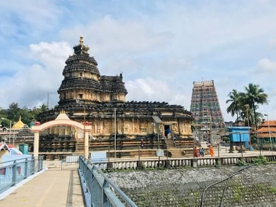

Sringeri is one of Karnataka's well-known spiritual destinations, situated beside the Tunga River in the Western Ghats. Visitors from Mangalore travel here to experience the revered Sri Sharada Peetham, admire historic temple architecture and spend time in a peaceful natural setting.
Planning a Mangalore to Sringeri temple trip by taxi gives families, pilgrims and small groups the flexibility to organise their pickup, sightseeing stops and return journey. This guide covers the places to see, useful travel preparations and how to enquire about a taxi for your visit.

In This Travel Guide
Why Visit Sringeri?
Sringeri is closely associated with Sri Adi Shankaracharya and the historic Sharada Peetham. Its religious significance, traditional architecture and riverside surroundings make it a meaningful destination for pilgrims and travellers interested in Karnataka's cultural heritage.
Depending on your schedule, you can plan a focused temple visit or spend longer exploring the town. Festivals and special religious occasions may attract more visitors, so allow extra time and confirm current temple arrangements before departure.
Places to Visit in Sringeri
1. Sri Sharadamba Temple
Sri Sharadamba Temple is the principal attraction for many visitors to Sringeri. Dedicated to Goddess Sharadamba, the temple is an important centre of worship and learning. Visitors come to offer prayers and experience its devotional atmosphere.
Dress respectfully, follow temple instructions and check the latest darshan timings before setting out. During festivals and holidays, additional time may be needed for parking and visiting.
2. Vidyashankara Temple
Vidyashankara Temple is known for its distinctive stone architecture and historical importance. Its detailed craftsmanship makes it a worthwhile stop for visitors who appreciate heritage buildings and traditional South Indian temple design.

Keep your visit unhurried and follow any photography restrictions or other instructions displayed at the temple. Ask locally about access arrangements if you are visiting during a special event.
3. Tunga River Surroundings
The Tunga River contributes to Sringeri's calm and scenic atmosphere. The riverside setting offers an opportunity to pause between temple visits and appreciate the surrounding landscape.

Water levels and conditions can change with the weather. Stay within permitted areas, supervise children closely and avoid entering the river where conditions are unsafe.
4. Sringeri Temple Complex and Heritage Surroundings
Beyond the main shrines, the temple complex and nearby heritage surroundings offer opportunities to appreciate Sringeri's religious traditions and architectural details. Allow enough time to explore respectfully rather than trying to fit too many stops into a short itinerary.

Planning Your Journey from Mangalore
The journey from Mangalore to Sringeri takes you from the coastal region towards the greener landscapes of the Western Ghats. Actual travel time and distance depend on the route selected, starting point, traffic, weather and road conditions.
Before departure, confirm the pickup location and expected travel schedule with your driver. If you plan to visit several places, agree on the itinerary and available time in advance.
Should You Plan a Day Trip or an Overnight Stay?
A same-day visit may suit travellers who want to focus on the main temples and have an early start. An overnight stay can offer a more relaxed pace, particularly for senior citizens, families with children or visitors who want additional time for sightseeing.
Your best option depends on your schedule, preferred pace and accommodation availability. If you are staying overnight, arrange your accommodation separately and confirm check-in details before beginning the journey.
Why Consider a Taxi for Your Sringeri Trip?
A private taxi can make it easier to organise the journey around your group and preferred schedule. It can be especially useful when you want to combine temple visits with meal breaks and other agreed stops.
- Private travel for families, pilgrims and small groups.
- Pickup planning from your preferred location in Mangalore.
- Flexibility to arrange stops and sightseeing in advance.
- Vehicle choices based on passenger numbers and luggage.
- Convenient travel for visitors who prefer not to drive themselves.
- Options to discuss a same-day return or a longer itinerary.
When requesting a quotation, confirm the vehicle, total fare, included kilometres, waiting charges if applicable, tolls, parking and any other conditions before finalising your trip.
What Should You Carry?
- Comfortable, respectful clothing suitable for temple visits.
- Walking footwear that can be removed easily where required.
- Drinking water and light refreshments for the journey.
- Personal medicines and any essential health supplies.
- Cash for offerings, parking and small purchases where necessary.
- A charged mobile phone and a charging cable or power bank.
- Booking confirmations and accommodation details, if applicable.
- Light rain protection when weather conditions call for it.
Helpful Tips for a Respectful Temple Visit
- Check current darshan timings before leaving Mangalore.
- Follow dress codes and instructions issued by temple authorities.
- Respect photography restrictions and worshippers' privacy.
- Keep the temple premises and river surroundings clean.
- Allow extra time during weekends, holidays and festivals.
- Follow local safety guidance near the river and on hill roads.
Frequently Asked Questions
1. How can I travel from Mangalore to Sringeri?
You can travel by private taxi or other available transport. A private taxi offers flexibility for temple visits, meal breaks and return travel. Confirm your route and schedule before departure.
2. Can I visit Sringeri from Mangalore in one day?
A same-day trip may be possible depending on your departure time, road conditions, temple schedules and sightseeing plans. Start early and allow sufficient time for the return journey.
3. Which places should I visit in Sringeri?
Popular places include Sri Sharadamba Temple, Vidyashankara Temple and the Tunga River surroundings. Check current access arrangements and temple timings before travelling.
4. Is a taxi suitable for senior citizens?
A private taxi can offer convenient point-to-point transport for senior citizens. Mention any mobility needs while booking and plan sufficient time for walking, rest breaks and temple visits.
5. How do I enquire about a Mangalore to Sringeri taxi?
Contact Radhakrishna Taxi Service at +91 81477 71217 or through WhatsApp. Share your travel date, pickup location, passenger count, vehicle preference and return plan to request a quotation.
Enquire About Your Mangalore to Sringeri Taxi
Radhakrishna Taxi Service can help you discuss travel arrangements for your Sringeri temple visit from Mangalore. Share your preferred travel date, pickup location, passenger count and vehicle preference. Mention whether you plan to return on the same day or stay overnight.
Request the fare and itinerary details before confirming your booking so you can plan your journey with confidence.
Plan Your Sringeri Temple Journey
Contact Radhakrishna Taxi Service to discuss your Mangalore pickup and travel arrangements for Sringeri.
Explore more travel information on our taxi routes, Karnataka tour packages and taxi services pages.